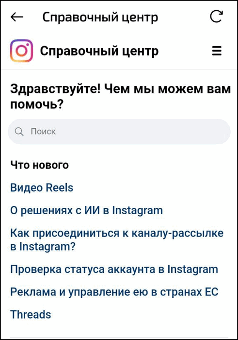
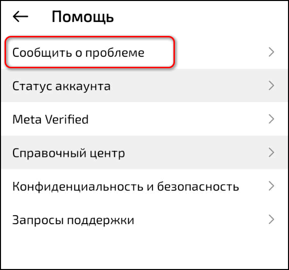
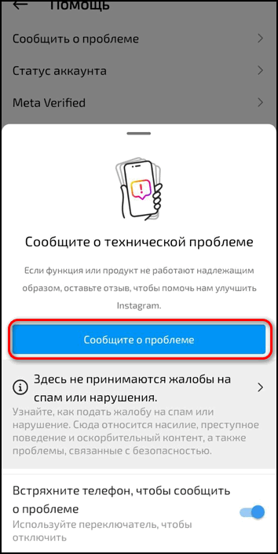
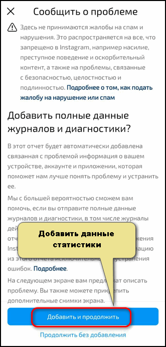
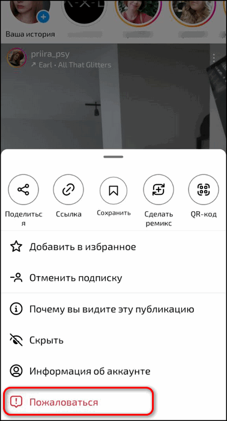
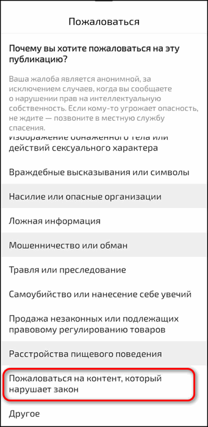

Обращение в поддержку Инстаграма: как написать и получить ответ

Написать в службу поддержки Инстаграма* можно с компьютерной и мобильной версии. Отдельно в социальной сети есть справка, где указаны наиболее распространенные вопросы и способы их решения.
Что такое справка
Справка – это раздел, где модераторы оставили ответы на часто задаваемые вопросы. В неё можно перейти через раздел «Настройки» или с компьютерной версии — в нижней части экрана.

Поддержка аккаунтов в Инстаграме* таким способом напоминает самообслуживание: пользователю предложено несколько способов решения проблемы, которыми он может воспользоваться и самостоятельно устранить неполадки. Справка включает ответы практически на любые вопросы, кроме:- личные конфликты между пользователями;
- ситуации с мошенничеством. Только персональное обращение в поддержку с подтверждением;
- нестандартные ситуации, связанные с работой приложения на непопулярных моделях смартфонов.
Прежде чем обращаться в службу поддержки, нужно внимательно посмотреть все разделы справки и изучить нововведения в политике пользования. Найти справку через приложение:
- Зайти в Инстаграм* — нажать в своем профиле три полоски сверху.
- Настройки и конфиденциальность — пролистать до конца.
- Помощь — Справочный центр.
В том же подразделе есть «Статус аккаунта» (количество нарушений, допущенных пользователем), подтверждение профиля, отдельная группа информации по конфиденциальности и безопасности, «Запросы поддержки» (количество обращений, ответы администрации).
Как обратиться к администрации Инстаграма*
Например, для восстановления аккаунта нужно связаться со службой поддержки Инстаграма* напрямую: относится к ситуациям, когда профиль был заблокирован без вины владельца. Написать в службу поддержки Инстаграма*:
- Открыть приложение — перейти в свой профиль.
- Три полоски сверху — Настройки.

- Помощь — Сообщить о проблеме.

Этот способ подойдет пользователям, которые авторизованы в своем профиле и у них нет проблем с работой мобильного приложения.
Для обычных пользователей
Для быстрого создания обращения социальная сеть предлагает функцию «встряхивание»: нужно потрясти телефоном в приложении, чтобы оформить заявку. Или перейти через стандартную категорию в настройках. Создать обращение в чат поддержки Инстаграма*:
- Перейти по активной ссылке: «Сообщить о проблеме».
- Подтвердить необходимость отправить отчет о предыдущих действиях.

- Кратко изложить проблему, описав все предпринятые действия.
Пользователь может отказаться от передачи отчета о своих действиях. Инстаграм* предлагает подобный вариант, чтобы помочь пользователям, которые не успели сделать скриншот или не знают как им поделиться.
Авторам и блогерам
Центр поддержки Инстаграма* предлагает авторам несколько вариантов обращения:
- формы в чужих аккаунтах и под публикациями;
- специальный раздел в справке: Перейти
- стандартное обращение с помощью приложения в разделе: «Помощь».
Если блогер подозревает, что его контент был украден или другой человек нагло воспользовался фотографиями без разрешения, то он может подать заявку через страницу обратной связи:
- Перейти к нужной публикации — нажать сверху три точки.

- Пожаловаться — Использование чужой интеллектуальной собственности.

- Описать проблему в дополнительном поле – отправить.
Модераторы дадут ответ, как только рассмотрят вопрос. Отправивший получит уведомление, где будет результат с описанием предпринятых мер: публикация была удалена, аккаунт, укравший пост, был заблокирован.
Обращение через компьютер
Чат-поддержки Инстаграм* доступен и с компьютерной версии: в настройках своего аккаунта нужно найти пункт: «Помощь» и отправить заявку. Как и с мобильного, в первую очередь – авторизация, после которой можно посетить свою страницу и отправить запрос модерации. Как обратиться к технической поддержке Инстаграма* с компьютера:
- Зайти в социальную сеть – авторизоваться.
- Нажать слева по меню: «Еще» - Сообщить о проблеме.
- Описать возникшую ситуацию – отправить.
В социальной сети есть полезная функция: прикрепить файл. Поможет, если нужно доказаться техническую ошибку или неправомерные действия другого пользователя.
Найти телефон службы поддержки или почту Инстаграма* не получится: такие варианты обращения были отключены. Поэтому последний способ, который есть у пользователей – отправить письмо модераторам через форму на сайте. С компьютерной версии, на главной, находится дополнительная форма подачи жалобы, через которую можно связаться с технической поддержкой. Она направлена на обработку заявок по поводу оскорбительного контента. Это должен быть юридически обоснованный запрос, при оформлении которого нужно ответить на несколько вопросов: страна проживания (России нет в списке), причина по которой создано обращение и подробная информация.
Отправить через смартфон
Сложнее обратиться без входа в аккаунт, но даже в этом случае есть решение:
- Воспользоваться ссылкой: Не получается восстановить страницу.
- Указать тип проблемы – Далее.
- Вписать имя пользователя – подтвердить свой аккаунт.
- Описать возникшую ситуацию и прикрепить доступный адрес электронной почты.
- Подождать, пока придет ответное сообщение от администрации.
Для полной процедуры восстановления доступа к аккаунту у пользователя могут потребовать видео или фото. Администрация пришлет письмо, которое содержит код, и получатель должен написать эту комбинацию на листочке и сфотографироваться. В некоторых случаях требуют документы для подтверждения личности. Обычно возвращение доступа занимает от пары дней до недели. Это зависит от нарушений, которые могли быть допущены, региона проживания пользователя.
Инстаграм* не ответил: что делать
Службы поддержки не отвечает только в крайних случаях: даже если пользователь нарушил правила – его уведомят о том, что страница была заблокирована из-за противоправных действий. Если письмо так не пришло:
- проверить папку «Спам». Порой сообщения могут оказаться там, вместо «Входящие»;
- еще раз отправить запрос. Возможно, в прошлый раз заявка не была передана.
Отправляя заявку в Инстаграм*, нужно использовать адрес электронной почты с доменом *com. С *ru социальная сеть не работает, поэтому ответ на такую почту может не прийти. Относительно языка, на котором составить письмо – любой. Администрация даст ответ с переводом, если текст не на английском. В любом случае, пользователь может перейти в переводчик и посмотреть, что написано в ответном сообщении.